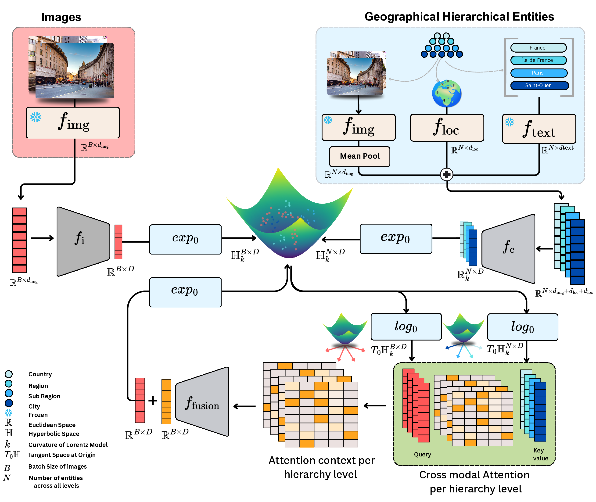
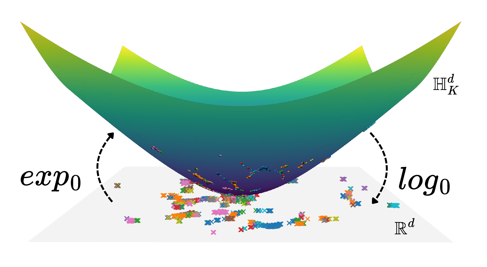
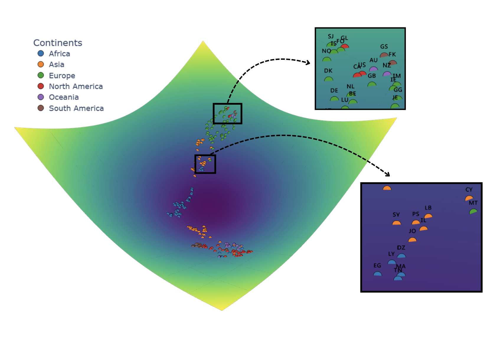
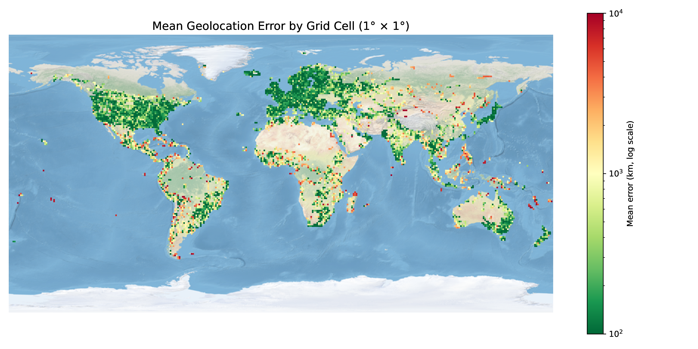
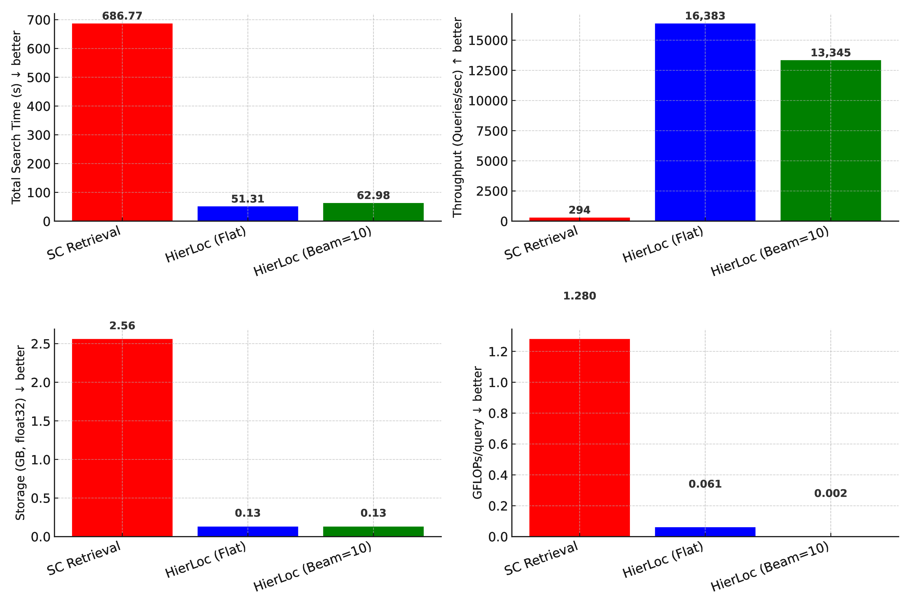
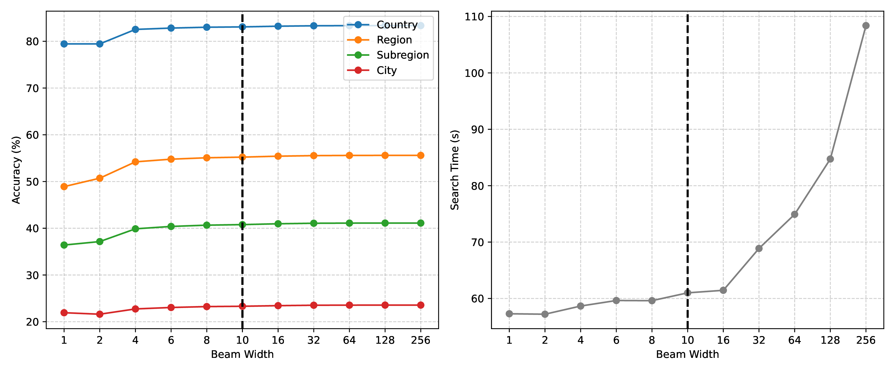
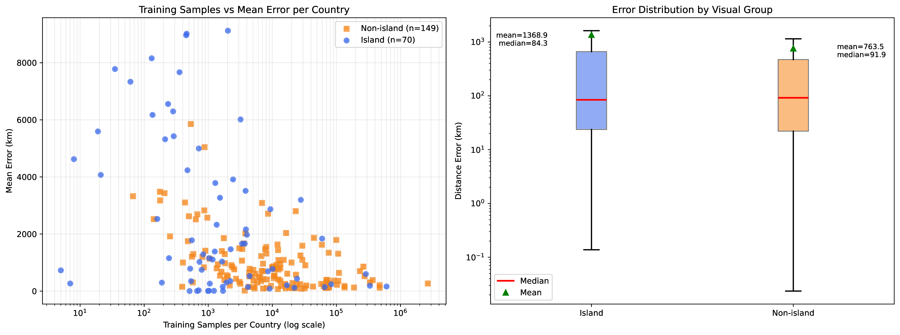
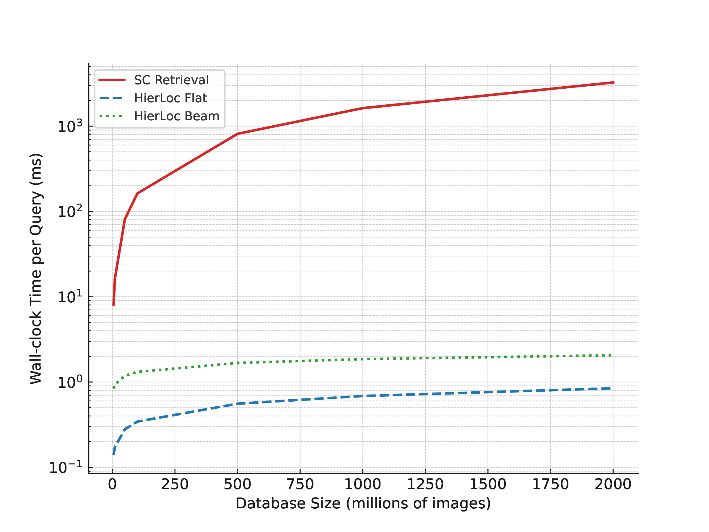
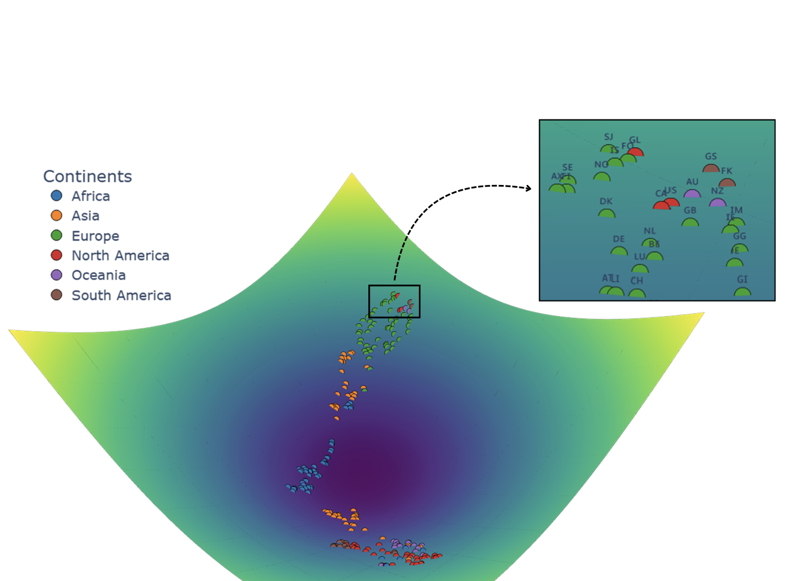

Abstract
Visual geolocalization, the task of predicting where an image was taken, remains challenging due to global scale, visual ambiguity, and the inherently hierarchical structure of geography. Existing paradigms rely on either large-scale retrieval, which requires storing a large number of image embeddings, grid-based classifiers that ignore geographic continuity, or generative models that diffuse over space but struggle with fine detail.
We introduce an entity-centric formulation of geolocation that replaces image-to-image retrieval with a compact hierarchy of geographic entities embedded in Hyperbolic space. Images are aligned directly to country, region, subregion, and city entities through Geo-Weighted Hyperbolic contrastive learning by directly incorporating haversine distance into the contrastive objective. This hierarchical design enables interpretable predictions and efficient inference with 240k entity embeddings instead of over 5 million image embeddings on the OSV5M benchmark, on which our method establishes a new state-of-the-art performance.
Compared to the current methods in the literature, it reduces mean geodesic error by 19.5%, while improving the fine-grained subregion accuracy by 43%. These results demonstrate that geometry-aware hierarchical embeddings provide a scalable and conceptually new alternative for global image geolocation.

HierLoc Architecture: Images are encoded and mapped with exp₀ into the Lorentz model of Hyperbolic space, while entities (countries, regions, subregions, cities) combine image, text, and location features. In tangent space at origin, cross-modal attention aligns each image with entities per hierarchy level. Training employs Geo-Weighted Hyperbolic InfoNCE (GWH-InfoNCE) loss.

Hyperbolic Projections: The exp₀ and log₀ functions enable bidirectional mapping between tangent space at origin O and hyperbolic space, preserving hierarchical tree-like relationships critical for geographic entity representation in Lorentz model (K = -1 curvature).

Research Overview: HierLoc achieves hierarchical geolocation in hyperbolic space with cross-modal attention. The method uses 240k geographic entity embeddings instead of 5M+ image embeddings, enabling efficient inference with 6.56× speedup over RFM S₂.

Geographic Error Distribution: Mean error visualization across global regions on OSV5M dataset. HierLoc achieves median localization error of 25.3 km, outperforming previous state-of-the-art methods with 19.5% relative improvement in mean geodesic error.
Table 1 - OSV5M Results: HierLoc achieves SOTA on OSV5M with 25.3 km median error and 47.1% recall@1km.
| Method | GeoScore ↑ | Dist. (km) ↓ | Country (%) | Region (%) | Subregion (%) | City (%) |
|---|---|---|---|---|---|---|
| SC 0-shot | 2273 | 2854 | 38.4 | 20.8 | 9.9 | 14.8 |
| Regression | 3028 | 1481 | 56.5 | 16.3 | 1.5 | 0.7 |
| ISNs | 3331 | 2308 | 66.8 | 39.4 | -- | 4.2 |
| Hybrid | 3361 | 1814 | 68.0 | 39.4 | 10.3 | 5.9 |
| SC Retrieval | 3597 | 1386 | 73.4 | 45.8 | 28.4 | 19.9 |
| RFM S2 | 3767 | 1069 | 76.2 | 44.2 | -- | 5.4 |
| LocDiff | -- | -- | 77.0 | 46.3 | -- | 11.0 |
| HierLoc (VITL-14) | 3850 | 1067 | 80.1 | 52.9 | 39.0 | 22.2 |
| HierLoc (DINOV3) | 3963 | 861 | 82.9 | 55.0 | 40.7 | 23.3 |
Table 2 - Benchmark Performance: Cross-dataset evaluation on IM2GPS, IM2GPS3K, and YFCC4K.
| Dataset / Method | Median (km) ↓ | 1 km ↑ | 25 km ↑ | 200 km ↑ | 750 km ↑ | 2500 km ↑ |
|---|---|---|---|---|---|---|
| IM2GPS | ||||||
| PlaNet | >200 | 8.4 | 24.5 | 37.6 | 53.6 | 71.3 |
| PIGEON | 70.5 | 14.8 | 40.9 | 63.3 | 82.3 | 91.1 |
| HierLoc | 21.4 | 10.5 | 51.9 | 67.5 | 83.1 | 92.4 |
| IM2GPS3K | ||||||
| PIGEON | 147.3 | 11.3 | 36.7 | 53.8 | 72.4 | 85.3 |
| Img2Loc | -- | 17.1 | 45.1 | 57.8 | 72.9 | 84.6 |
| HierLoc | 73.4 | 11.3 | 43.8 | 58.4 | 74.1 | 85.1 |
| YFCC4K | ||||||
| PIGEON | 383.0 | 10.4 | 23.7 | 40.6 | 62.2 | 77.7 |
| Img2Loc | -- | 14.1 | 29.5 | 41.4 | 59.2 | 76.8 |
| HierLoc | 341.9 | 8.4 | 30.2 | 43.3 | 61.7 | 75.8 |

Inference Strategies: Beam search comparison showing HierLoc achieves 97% of full-search accuracy using less than 10% search time. At beam width=5, HierLoc achieves 135 km error vs 433 km error for SC retrieval with 240k image searches per query.

Beam Width Optimization: Accuracies and search time for different beam widths. Narrow beam (width=10) achieves near-optimal accuracy (98.7% of best) with 95% reduction in search time, demonstrating efficient hierarchical search in hyperbolic space with room for speed-accuracy trade-offs.

Island vs Mainland Analysis: HierLoc shows consistent improvement over baselines across both island (Vatican City: 0.7 km↓error) and mainland territories. Cross-attention particularly helps challenging regions, reducing median errors from 545 km to 411 km on IM2GPS3K.

Computational Efficiency: Inference latency vs accuracy on same GPU. HierLoc provides 6.56× speedup over RFM S₂ during inference while using 10× fewer training images (4.7M vs 48M). Scales efficiently to billions of query images with 0.64 ms per image on A100 GPU.

Manifold Sensitivity: Hyperbolic outperforms Euclidean/spherical across benchmarks: 25.3 km vs 27.4 km vs 28.9 km median error on OSV5M. Validating hyperbolic geometry choice: provides 7.7% and 12.5% error reduction vs Euclidean and spherical respectively across all datasets.

HierLoc: Hierarchical Geolocation in Hyperbolic Space with Cross-Modal Attention for Accurate and Efficient Image Geolocation. Accepted to ICLR 2026.
Results
Methodology Explained
The Challenge: Finding Your Place
Visual geolocation is like finding a needle in a haystack—but the haystack is the entire planet. Standard methods struggle with the sheer scale and ambiguity of the world.
The Old Way vs. HierLoc
Most systems use massive image retrieval (slow) or rigid grids (inaccurate). HierLoc treats the world as a hierarchy of entities, aligning images to places, not just other images.
The Core Insight: Multimodal Entities
We don't just use coordinates. We fuse Vision (DINOv3), Language (CLIP), and Location into a single "Entity Prototype."
The Architecture
How it works under the hood: Images and Entities are projected into a shared Tangent Space, aligned via Cross-Attention, and then mapped into Hyperbolic Space.
Why Geometry Matters
See the difference: Euclidean space crushes the hierarchy. Hyperbolic space preserves it. This structure allows us to search 240k entities instead of 5 million images—faster, smarter, and more accurate.
Smart Navigation: Beam Search
We don't scan blindly. We navigate. By traversing the tree (Continent → Country → City) with Beam Search, HierLoc reduces 5 million comparisons to just ~400. That's O(log N) speed.
BibTeX
@misc{gadi2026hierlochyperbolicentityembeddings,
title={HierLoc: Hyperbolic Entity Embeddings for Hierarchical Visual Geolocation},
author={Hari Krishna Gadi and Daniel Matos and Hongyi Luo and Lu Liu and Yongliang Wang and Yanfeng Zhang and Liqiu Meng},
year={2026},
eprint={2601.23064},
archivePrefix={arXiv},
primaryClass={cs.CV},
url={https://arxiv.org/abs/2601.23064},
}